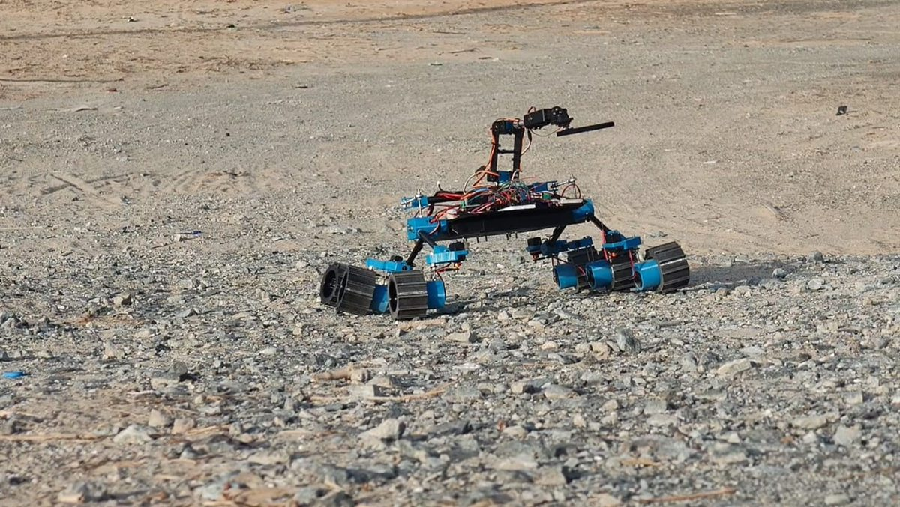
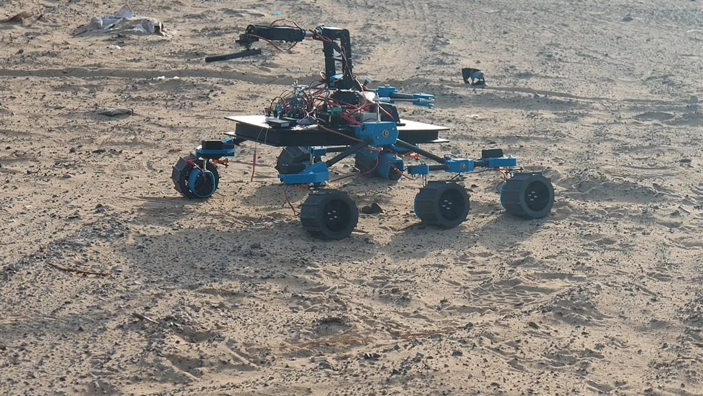

Lunar Rover Prototype
- Wheels
- 6, rocker-bogie
- Arm
- 6-axis
- Material
- Creality CR-PETG
- CAD size
- 659 × 600 × 446 mm
A remote-controlled prototype of a lunar south-pole maintenance rover concept: six-wheel rocker-bogie suspension, a six-axis arm for the dust-removal tool and a 3D-printed PETG chassis. I did the detailed design and the additive manufacturing of the prototype.
The rover concept, analysis and report are Gopika Sankar's B.Tech graduation project at Amity University Dubai (June 2026, supervised by Dr Sarath Raj Nadarajan Syamala). This page covers only my part of the work.
In the field


Interactive model
Loading 3D model…
Drag to rotate, scroll or pinch to zoom, right-drag or two fingers to pan. This is a reduced mesh of the prototype's CAD model: about 200,000 triangles, down from about 1 million in the CAD export, so it loads quickly. The file is about 10 MB.
Detailed design
The concept CAD was reworked into a prototype that can be printed and assembled: parts sized for a large-format FDM printer and designed around PETG.
- Chassis
- Two-piece box girder. The bottom plate has expanded vertical walls and internal ribs, and carries the main rocker-bogie pivot bolts so suspension loads stay out of the electronics bay. The top plate sits flush on it to close the box and holds the electronics on brass heat-set inserts.
- Suspension
- A rocker-bogie on each side, joined by a top-mounted differential bar made from threaded rods and fisheye rod ends. The bar lets the chassis pitch against the terrain while keeping all six wheels on the ground. Bearings and bushings sit at every rocker-bogie pivot and arm joint to cut friction and play.
- Steering
- Servos mounted directly on the wheel assemblies, with pushrods to the steering knuckles that turn servo rotation into wheel deflection. Four corner wheels steer, and the firmware limits their travel to 45 degrees.
- Arm
- Six axes in printed PETG segments: base rotation, shoulder, elbow, wrist pitch, wrist roll and a toolhead sweep, driven from a 16-channel servo driver.
- Fasteners
- High-tensile steel nuts and bolts throughout, so parts can be swapped or adjusted in the field.
Additive manufacturing
The chassis is large, so the prototype was printed on an Elegoo Neptune 4 Max. Its build volume allowed monolithic chassis parts, which removed weak joints and bonded sub-assemblies.
| Item | Choice |
|---|---|
| Material | Creality CR-PETG for all custom structural parts: chassis sections, suspension elements and arm segments |
| Why PETG | Chosen over standard PLA to survive high ambient temperatures in outdoor testing, resist fatigue and absorb shock without brittle failure |
| Infill and walls | At least 40% gyroid infill and extra walls around load-bearing stress concentrations |
| Threaded mounts | Brass heat-set inserts in the printed top plate, for strip-resistant electronics mounting points |
Components and layout
| Component | Part |
|---|---|
| Drive motors | Geared DC motors |
| Motor drivers | Dual H-bridge boards, BTS7960 / HW-039 |
| Controller | ESP32 |
| Servo driver | PCA9685, 16-channel, for the arm and steering servos |
| Receiver | FlySky FS-iA10B, 2.4 GHz |
| Power regulation | Buck converters, 20 A and 5 A |
| Wiring | Silicone power and motor cable, Deans (T-plug) battery connectors, jumper wires for signals |
| Linkages and joints | Threaded rods, fisheye rod ends, steering pushrods, bearings and bushings |
The ESP32 and the servo driver sit at the front of the top plate, and the buck converters at the rear. The bottom plate has an internal bay for wiring, with the battery at the rear. This keeps signal wires short and separates the high-current parts from the logic boards, and the rear battery helps the centre of gravity. The transmitter's mode switch changes the sticks between driving and moving the arm.
Testing and results
Workshop
On a flat floor first: checking signal binding and delay between the receiver and the ESP32, setting the endpoints of the steering pushrods and arm joints by calibrating the PWM signals, and a power-draw check that the 20 A and 5 A converters held voltage with the drive motors and arm servos stalled at the same time.
Field tests
Outdoors on unimproved empty lots in Dubai: fine loose sand, coarse uneven gravel and sharp rocks up to 1.5 times the wheel diameter. The rover was driven over continuous obstacle tracks and up loose sand inclines, and steered with its wheels half buried in sand.
- Suspension: climbed rocky obstacles without lifting the opposite wheels or losing grip. The differential bar shared load between the bogies.
- Structure: the PETG box girder showed no cracking or warping despite vibration and impacts off-road.
- Steering: the pushrod steering gave positive control and let the rover free itself with its wheels sunk in loose sand.
- Electronics: separating logic from power avoided interference and overheating, and the heat-set inserts stayed tight.
- Limitation: on very soft sand the rover's weight made the wheels sink and lose traction, and more motor power only made them spin. The report points to the wheel design and mass distribution, and names wheel shape, tread, contact area and lower mass as the next work.
These were qualitative tests. The report gives no speeds, slope angles or measured loads.